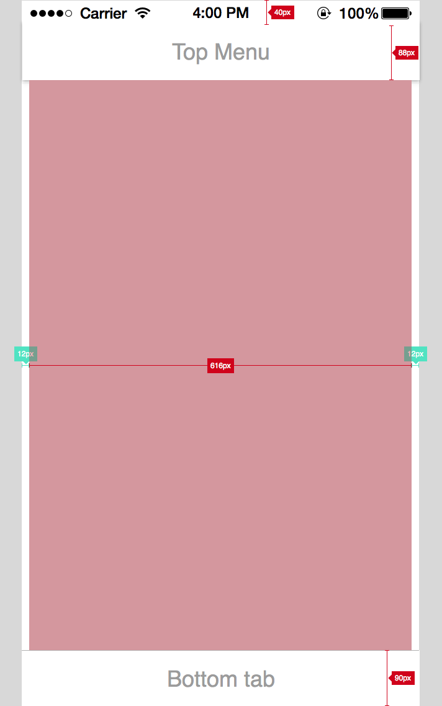
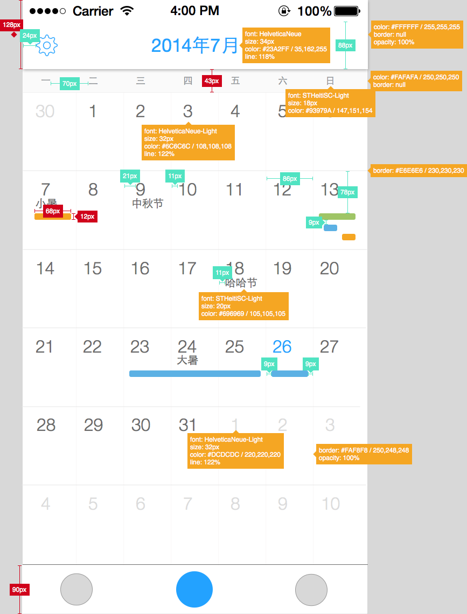
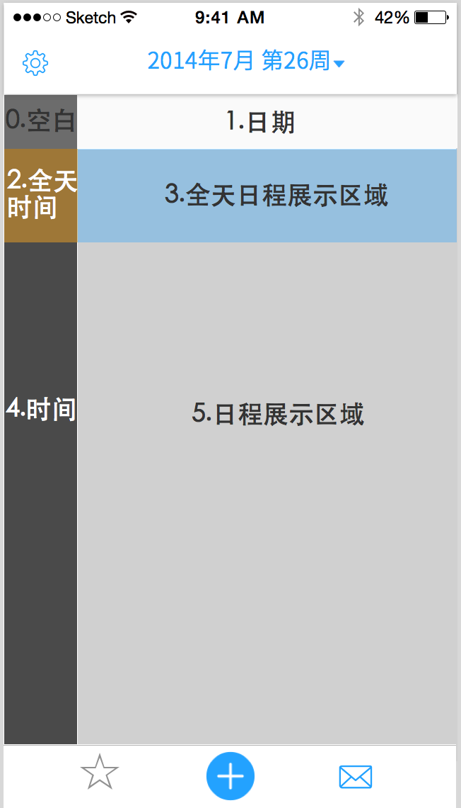
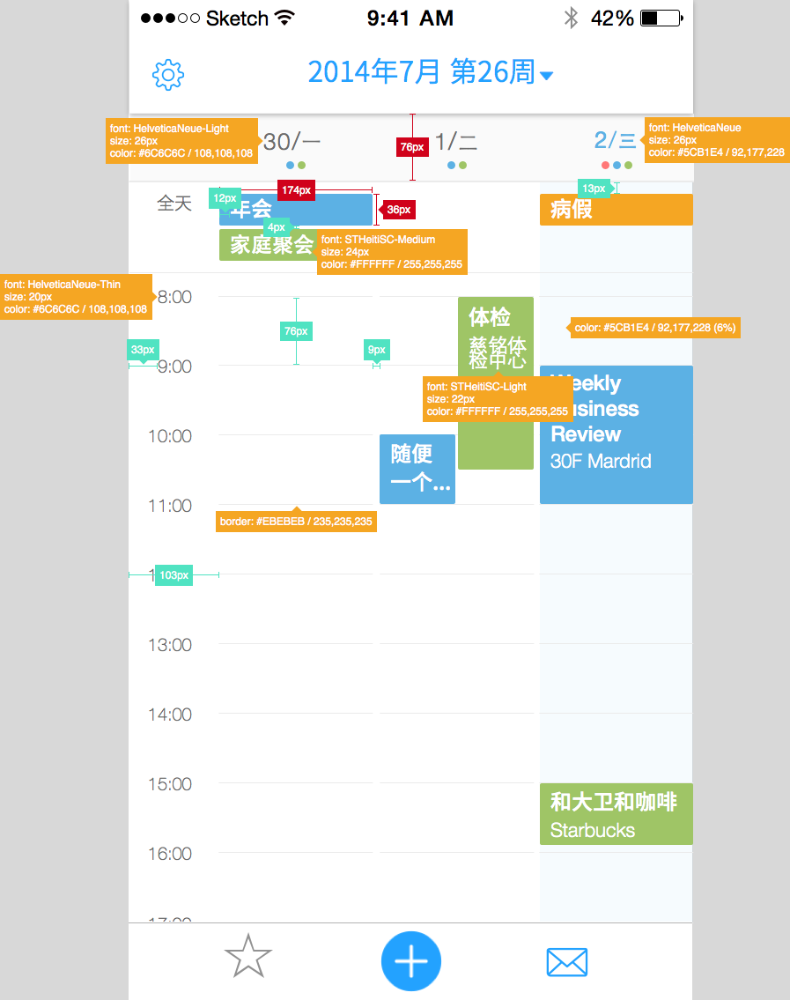

日历视图产品需求文档
1 概述
应用为了兼顾用户的使用习惯，提供了四种视图：月视图、周视图、日视图和列表视图。
如果无法观看视频，请安装最新版的Safari
- 日程矩形圆角弧度统一为2px
- 日程颜色为：#5CB1E4，#F5A623，#9FC566
2 月视图
2.1 交互
如果无法观看视频，请安装最新版的Safari
- 左右滑动切换月份。滑动时出现蒙版，蒙板上显示月份信息
- 切换月份时，顶部菜单栏的日期也跟随变化。
- 点击某一天，当天的日程从中间展开，展开的高度固定
- 点击第一排的某天，第一排不动，其余排下移固定高度
- 点击第二排的某天，第一排和第二排不动，其余排下移固定高度
- 点击中间两排时，上下两部分分别向上、向下移动固定距离
- 点击倒数第二排时，最后不排不动，其余向上移动固定距离
- 点击最后一排时，全部上线移动固定距离
- 如果固定高度内日程无法全部显示，则可以下拉查看当天的其他日程
- 同一周内切换日期，展开部分通过左右滑动来显示对应日期的日程
2.2 视觉
- 月视图中日程区域的宽度是616px，每一天的宽度是88px，日程区域距离左边和右边12px
- 月视图中，日期、节日和日程bar采用左对齐的策略
- 视图中横向和竖向线宽均为1px
- 图中距离的标注均不包含线宽，例如每天的宽度是88px，标注中为86px，因为线宽为1px
- top menu中的图标上下居中


3 周视图
3.1 交互
周视图提供左右滑动和上下滑动的交互方式，并且支持点击视图中时间添加日程。

- 周视图存在6个区域
- 区域1展示3天的日期
- 区域2显示“全天这两个字”
- 区域3显示3天得全天日程，高度随着日程的多少而变化
- 区域4显示0-24点得时间
- 区域5显示3天的日程
- 各个区域的交互方式如下：
- 区域的图层高度为0>1>2>3>4>5
- 区域4、5可以上线滑动
- 区域1、3、5可以左右滑动
3.2 视觉及标注

- 区域1背景色为#FAFAFA，和月视图对应区域颜色一致
- “今天”的背景和文字均采用蓝色，颜色值如上图所示.